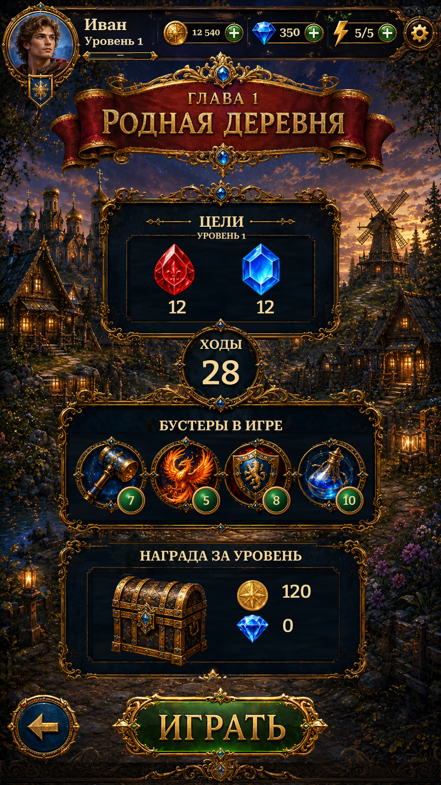

Pre-Level · reference rebuildPre-Level · original panels and repaired edges
Shared player header, original panel and booster artwork, live objectives, moves, inventory and rewards. Repaired the moves-panel overlap, reward-frame top edge and clipped booster medallions.
Native views are actual Unity captures from isolated test saves. The original and earlier versions are explicitly labelled. 44 targeted Unity checks passed.
